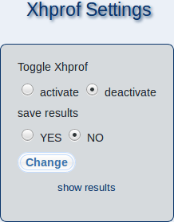

On this page, you can do performance profiling of your m23 server with Xhprof to analyze its run time behaviour (CPU and memory usage).

By selecting ''activate'' at ''Toggle Xhprof'' you can activate Xhprof usage. To deactivate, choose the ''deactivate'' option. When profiling is active, an overlay will indicate how long it took to generate the currently viewed page.
To save the results for a later analyze of the run time behaviour of specific functions, select ''YES'' at ''save results''. When this option is active, a profiling file will be generated for each page that you will access. You can find these profiling files at ''
/var/cache/xhprof/runs
''. To deactivate profiling, select ''NO''.
Save your settings by clicking on ''Change''.
You can view the generated profiling results when you click on ''show results'' and remove them by clicking on the red X at the left of the corresponding profile result in the list.
root
2017-12-13